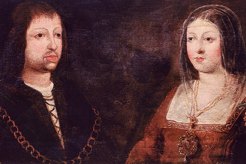

BLOQUE I: La Península Ibérica desde los primeros humanos hasta la desaparición de la monarquía visigoda (711)
|
BLOQUE II: La Edad Media: Tres culturas y un mapa político en constante cambio (711-1474)
|
BLOQUE III: La formación de la Monarquía Hispánica y su expansión mundial (1474- 1700)

|
|